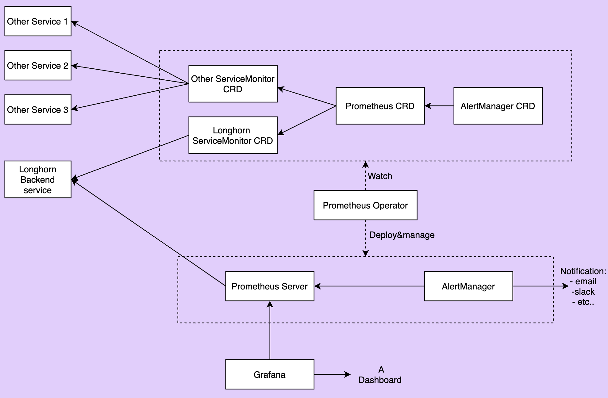

|
本文档采用自动化机器翻译技术翻译。 尽管我们力求提供准确的译文，但不对翻译内容的完整性、准确性或可靠性作出任何保证。 若出现任何内容不一致情况，请以原始 英文 版本为准，且原始英文版本为权威文本。 |
|
这是尚未发布的文档。 SUSE® Storage 1.12 (Dev). |
配置 Prometheus 和 Grafana 以监控 SUSE® Storage
Longhorn 原生在 REST 端点 http://LONGHORN_MANAGER_IP:PORT/metrics 上以 Prometheus 文本格式 暴露指标。
您可以使用任何收集工具，例如 Prometheus、 Graphite、 Telegraf 来抓取这些指标，然后通过 Grafana 等工具可视化收集的数据。
请参见 Longhorn 监控指标 以获取可用指标。
高级概述
监控系统使用 Prometheus 来收集数据及触发警报，并使用 Grafana 来可视化收集的数据。
-
Prometheus 服务器从 Longhorn 指标端点抓取并存储时间序列数据。Prometheus 还负责根据配置的规则和收集的数据生成警报。Prometheus 服务器随后将警报发送到 Alertmanager。
-
AlertManager 然后管理这些警报，包括静音、抑制、聚合，并通过电子邮件、值班通知系统和聊天平台等方式发送通知。
-
Grafana 查询 Prometheus 服务器以获取数据并绘制可视化仪表板。
下图描述了监控系统的详细架构。

在上图中有 2 个未提及的组件：
-
Longhorn 后端服务是指向一组 Longhorn 管理器 Pod 的服务。Longhorn 的指标在 Longhorn 管理器 Pod 的端点
http://LONGHORN_MANAGER_IP:PORT/metrics中暴露。 -
Prometheus Operator 使在 Kubernetes 上运行 Prometheus 变得非常简单。该 Operator 监视 3 个自定义资源：ServiceMonitor、Prometheus 和 AlertManager。 当您创建这些自定义资源时，Prometheus Operator 会根据用户指定的配置部署和管理 Prometheus 服务器和 AlertManager。
安装
该文档使用 default 作为监控系统的名称空间。要在不同的名称空间上安装，请在清单中更改字段`namespace: <OTHER_NAMESPACE>`。
安装Longhorn ServiceMonitor
使用Kubectl安装Longhorn ServiceMonitor
为Longhorn Manager创建ServiceMonitor。
apiVersion: monitoring.coreos.com/v1
kind: ServiceMonitor
metadata:
name: longhorn-prometheus-servicemonitor
namespace: default
labels:
name: longhorn-prometheus-servicemonitor
spec:
selector:
matchLabels:
app: longhorn-manager
namespaceSelector:
matchNames:
- longhorn-system
endpoints:
- port: manager使用Helm安装Longhorn ServiceMonitor
-
修改 YAML 文件
longhorn/chart/values.yaml。metrics: serviceMonitor: # -- Setting that allows the creation of a [Prometheus Operator](https://prometheus-operator.dev/) ServiceMonitor resource for Longhorn Manager components. enabled: true -
使用 Helm 为 Longhorn Manager 创建 ServiceMonitor。
helm upgrade longhorn longhorn/longhorn --namespace longhorn-system -f values.yaml
Longhorn ServiceMonitor 是 Prometheus Operator 自定义资源。此设置允许 Prometheus 服务器发现所有 Longhorn Manager Pod 及其各自的端点。
您可以使用标签选择器 app: longhorn-manager 来选择 longhorn-backend 服务，该服务指向一组 Longhorn Manager Pod。
安装并配置Prometheus AlertManager
-
创建一个具有3个实例的高可用性Alertmanager部署。
apiVersion: monitoring.coreos.com/v1 kind: Alertmanager metadata: name: longhorn namespace: default spec: replicas: 3 -
Alertmanager实例不会启动，除非提供有效的配置。 请参见 Prometheus - 配置以获取更多说明。
global: resolve_timeout: 5m route: group_by: [alertname] receiver: email_and_slack receivers: - name: email_and_slack email_configs: - to: <the email address to send notifications to> from: <the sender address> smarthost: <the SMTP host through which emails are sent> # SMTP authentication information. auth_username: <the username> auth_identity: <the identity> auth_password: <the password> headers: subject: 'Longhorn-Alert' text: |- {{ range .Alerts }} *Alert:* {{ .Annotations.summary }} - `{{ .Labels.severity }}` *Description:* {{ .Annotations.description }} *Details:* {{ range .Labels.SortedPairs }} • *{{ .Name }}:* `{{ .Value }}` {{ end }} {{ end }} slack_configs: - api_url: <the Slack webhook URL> channel: <the channel or user to send notifications to> text: |- {{ range .Alerts }} *Alert:* {{ .Annotations.summary }} - `{{ .Labels.severity }}` *Description:* {{ .Annotations.description }} *Details:* {{ range .Labels.SortedPairs }} • *{{ .Name }}:* `{{ .Value }}` {{ end }} {{ end }}将上述Alertmanager配置保存在名为`alertmanager.yaml`的文件中，并使用kubectl从中创建一个密钥。
Alertmanager实例要求密钥资源命名遵循格式`alertmanager-<ALERTMANAGER_NAME>`。在上一步中，Alertmanager 的名称是
longhorn，因此密钥名称必须是alertmanager-longhorn。$ kubectl create secret generic alertmanager-longhorn --from-file=alertmanager.yaml -n default -
要查看 Alertmanager 的 Web UI，请通过 Service 进行暴露。一种简单的方法是使用类型为 NodePort 的 Service。
apiVersion: v1 kind: Service metadata: name: alertmanager-longhorn namespace: default spec: type: NodePort ports: - name: web nodePort: 30903 port: 9093 protocol: TCP targetPort: web selector: alertmanager: longhorn创建上述服务后，您可以通过节点的 IP 和端口 30903 访问 Alertmanager 的 Web UI。
仅使用上述
NodePort服务进行快速验证，因为它不通过 TLS 连接进行通信。您可能想将服务类型更改为ClusterIP，并设置 Ingress 控制器以通过 TLS 连接暴露 Alertmanager 的 Web UI。
安装并配置 Prometheus 服务器。
-
创建 PrometheusRule 自定义资源以定义警报条件。有关 Longhorn 警报规则的更多示例，请参见 Longhorn 警报规则示例。
apiVersion: monitoring.coreos.com/v1 kind: PrometheusRule metadata: labels: prometheus: longhorn role: alert-rules name: prometheus-longhorn-rules namespace: default spec: groups: - name: longhorn.rules rules: - alert: LonghornVolumeUsageCritical annotations: description: Longhorn volume {{$labels.volume}} on {{$labels.node}} is at {{$value}}% used for more than 5 minutes. summary: Longhorn volume capacity is over 90% used. expr: 100 * (longhorn_volume_usage_bytes / longhorn_volume_capacity_bytes) > 90 for: 5m labels: issue: Longhorn volume {{$labels.volume}} usage on {{$labels.node}} is critical. severity: critical有关更多信息，请参见 Prometheus - 警报规则。
-
如果启用了 RBAC 授权，请为 Prometheus Pods 创建 ClusterRole 和 ClusterRoleBinding。
apiVersion: v1 kind: ServiceAccount metadata: name: prometheus namespace: defaultapiVersion: rbac.authorization.k8s.io/v1 kind: ClusterRole metadata: name: prometheus namespace: default rules: - apiGroups: [""] resources: - nodes - services - endpoints - pods verbs: ["get", "list", "watch"] - apiGroups: [""] resources: - configmaps verbs: ["get"] - nonResourceURLs: ["/metrics"] verbs: ["get"]apiVersion: rbac.authorization.k8s.io/v1 kind: ClusterRoleBinding metadata: name: prometheus roleRef: apiGroup: rbac.authorization.k8s.io kind: ClusterRole name: prometheus subjects: - kind: ServiceAccount name: prometheus namespace: default -
创建 Prometheus 自定义资源。请注意，我们在 spec 中选择了 Longhorn 服务监视器和 Longhorn 规则。
apiVersion: monitoring.coreos.com/v1 kind: Prometheus metadata: name: longhorn namespace: default spec: replicas: 2 serviceAccountName: prometheus alerting: alertmanagers: - namespace: default name: alertmanager-longhorn port: web serviceMonitorSelector: matchLabels: name: longhorn-prometheus-servicemonitor ruleSelector: matchLabels: prometheus: longhorn role: alert-rules -
要查看 Prometheus 服务器的 Web UI，请通过 Service 进行暴露。一种简单的方法是使用类型为 NodePort 的 Service。
apiVersion: v1 kind: Service metadata: name: prometheus-longhorn namespace: default spec: type: NodePort ports: - name: web nodePort: 30904 port: 9090 protocol: TCP targetPort: web selector: prometheus: longhorn创建上述服务后，您可以通过节点的 IP 和端口 30904 访问 Prometheus 服务器的 Web UI。
此时，您应该能够在 Prometheus 服务器 UI 的目标和规则部分看到所有 Longhorn Manager 的目标以及 Longhorn 规则。
仅使用上述 NodePort 服务进行快速验证，因为它不通过 TLS 连接进行通信。您可能想将服务类型更改为
ClusterIP，并设置 Ingress 控制器以通过 TLS 连接暴露 Prometheus 服务器的 Web UI。
设置 Grafana。
-
创建 Grafana 数据源 ConfigMap。
apiVersion: v1 kind: ConfigMap metadata: name: grafana-datasources namespace: default data: prometheus.yaml: |- { "apiVersion": 1, "datasources": [ { "access":"proxy", "editable": true, "name": "prometheus-longhorn", "orgId": 1, "type": "prometheus", "url": "http://prometheus-longhorn.default.svc:9090", "version": 1 } ] }注意： 如果您在不同的名称空间中安装监控堆栈，请更改字段
url。+http://prometheus-longhorn.<NAMESPACE>.svc:9090" -
创建 Grafana 部署。
apiVersion: apps/v1 kind: Deployment metadata: name: grafana namespace: default labels: app: grafana spec: replicas: 1 selector: matchLabels: app: grafana template: metadata: name: grafana labels: app: grafana spec: containers: - name: grafana image: grafana/grafana:7.1.5 ports: - name: grafana containerPort: 3000 resources: limits: memory: "500Mi" cpu: "300m" requests: memory: "500Mi" cpu: "200m" volumeMounts: - mountPath: /var/lib/grafana name: grafana-storage - mountPath: /etc/grafana/provisioning/datasources name: grafana-datasources readOnly: false volumes: - name: grafana-storage emptyDir: {} - name: grafana-datasources configMap: defaultMode: 420 name: grafana-datasources -
创建 Grafana 服务。
apiVersion: v1 kind: Service metadata: name: grafana namespace: default spec: selector: app: grafana type: ClusterIP ports: - port: 3000 targetPort: 3000 -
在 NodePort
32000上暴露 Grafana。kubectl -n default patch svc grafana --type='json' -p '[{"op":"replace","path":"/spec/type","value":"NodePort"},{"op":"replace","path":"/spec/ports/0/nodePort","value":32000}]'仅使用上述 NodePort 服务进行快速验证，因为它不通过 TLS 连接进行通信。您可能希望将服务类型更改为 ClusterIP，并设置 Ingress 控制器以通过 TLS 连接暴露 Grafana。
-
使用任何节点 IP 在端口
32000访问 Grafana 仪表板。# Default Credential User: admin Pass: admin -
设置 Longhorn 仪表板。
进入 Grafana 后，导入预构建的 Longhorn 示例仪表板。
请参阅 Grafana Lab - 导出和导入 以获取导入 Grafana 仪表板的说明。
您应该在成功设置后看到以下仪表板：